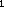
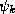
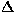
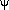

News
News
| Getting Started | Documentation | Glish | Learn More | Programming | Contact Us |
|
| VERSIONID |
News
|
sampler
saturation
scanner
scintillation
scripter
scroll
secondary
self-calibration
self-calibration gain solution algorithm
server
SGML
Shannon sampling theorem
Shape
sidelobe
sidereal day
sidereal year
single dish
Sky Model
slice
snapshot
Sobel filter
software mount
sort order
source model
spatial resolution
spectral index
Spectrum set
spherical aberration
spheroidal function
spillover
spreadsheet
stateless
Steer-Dewdney-Ito CLEAN
Stokes' parameters
Stokes' visibility functions
StorageManager
subreflector
super-resolution
support
support width
surface brightness
synthesized beam
system temperature
In communications and in radio astronomy, a device that converts a continuous-time signal v(t) into a discrete-time sequence of its samples {v(t) : k = 0,1,.....,n}. A digitizer combines a sampler and a quantizer.
A parameter that may be used with hue and intensity to describe the physical perception of color.
Saturation is a measure of the (perceived) narrowness of the color spectrum, or the difference of the hue from a gray of the same intensity. Neutral gray---or a "white" spectrum---is termed 0% saturated, and a monochromatic spectrum is termed 100% saturated.
See also chromaticity, CMYK, RGB.
An input device for a computer that digitizes a photograph or other optical image into a binary representation. A scanner may be linked to optical character recognition software allowing printed documents to be converted directly to machine-readable text files.
Many AIPS++ GUIs can generate the equivalent glish code for some operations. This code is usually sent to the scripter, which is a tool for editing, saving, and executing such glish code. This also forms a simple and relatively painless way to learn glish.
A feature of a graphics display, a browser or a computer terminal whereby information that is too voluminous to be displayed simultaneously in an available window can be moved through that window under the user's control. The user thereby interactively "roams" through the information.
Adjective identifying the second surface to reflect radiation in a telescope.
In a radio telescope, the primary reflector is usually the surface of the panels or, in a low-frequency antenna, a wire mesh. This is sometimes referred to as the main reflector or simply, the dish. The secondary reflector, if any, is often called the subreflector.
Many of the systematic errors affecting interferometer visibility measurements may be assumed to be multiplicative and ascribable to individual array elements. That is, in an n element array, the observations on the n(n-1)/2 baselines are afflicted by n sources of error, the so-called antenna/i.f. gains g(t). Given a rough estimate of the true source visibility, a model obtained, say, by mapping and cleaning roughly calibrated data, one may solve for the unknown gains-and it is not unreasonable to do so, because there are (n-1)/2 times more observations than antenna gains. he number of degrees of freedom can be held further in check by assuming that the g(t) are slowly-varying or that they are of unit modulus (i.e., that no amplitude errors are present), or by designing an array with redundant spacings.
Having once solved for the unknown g, one may correct the data, make another image, and repeat the process. This iterative scheme, which yields successive approximations to the true radio source brightness distribution, is known as self-calibration. Self-calibration is essentially identical to the technique of hybrid mapping, which is widely used in VLBI. See self-calibration gain solution algorithm; also see the review paper by T. J. Pearson and A. C. S. Readhead, Image formation by self-calibration in radio astronomy, Ann. Rev. Astron. Astrophys., 22 (1984) 97-130.
In self-calibration, the unknown antenna/i.f. gains g(t) may be approximated by minimizing a functional S(g,.....,g) given by a weighted discrete norm of the residuals:
Here is the visibility measurement obtained on the i-j baseline (at a given instant), is the corresponding model visibility, and the w are suitably chosen weights. Usually the g(t) may be assumed not to vary too rapidly with time t, so that one may minimize, instead, the functional
where
is the time-average of the ratio of observed visibility to model visibility, over a time period during which the gains may be assumed constant.
It has been common (e.g., in Classic AIPS) to allow the choices p = 1 and p =2 when solving for the gains. Choosing p = 2 yields the least-squares solution for g. When one chooses p = 1, so that a weighted sum of the moduli of the residuals is minimized, the computed gain solutions are less influenced by wild data points, but there is some loss of statistical efficiency---i.e., the least-squares solutions are superior when the distribution of measurement errors is well-behaved. Setting p near 1.2 might offer a better compromise between efficiency and robustness. See VLA Scientific Memo. No. 136 [F. R. Schwab, Robust solution for antenna gains] for further details.
One may wish to solve only for the antenna/i.f. phases  rather than for the full if, for example, atmospheric phase corruption is believed to be the dominant source of systematic error. In this case, one minimizes
(or the version thereof incorporating time-averages).
Cornwell and Wilkinson [A new method for making maps with unstable radio interferometers, , 196 1981) 1067-1086] suggest adding to S terms which arise by assuming prior distributions for the g(t); these "penalty terms" would be chosen so as to increase in magnitude as the solution parameter deviates from a prior mean which one might take, say, as the running mean of previous gain solutions. The widths of the prior distributions could be based on empirical knowledge of the behavior of the array elements. Such a modification can be useful when the array is composed of antenna elements of differing effective areas, as is often the case in VLBI.
1. A program which serves other (client) programs. The connection between client and server is normally by means of message passing, often over a network, using some protocol to encode the client's requests and the server's responses. The server may run continuously (as a daemon), waiting for requests to arrive or it may be invoked by a higher-level daemon which controls a number of servers. Servers associated with the Internet include those for Network File System, Network Information Service (NIS), Domain Name System (DNS), FTP, news, finger, etc. See client-server.
2. A computer which provides some service for other computers connected to it via a network. The most common example is a file server which has a local disk and services requests from remote clients to read and write files on that disk.
Standard Generalized Markup Language : a generic document markup language. The information in SGML documents can be shared by browsers, publishing systems, database managers, inventory control systems, etc. SGML provides a vendor-neutral, formal, international standard for information interchange and is widely used for sharing document-based information in open systems environments. Defined in ISO IEC 8879-1986, it has been adopted as a standard for data and document interchange in open system environments.
SGML aims to separate information from its presentation and thus to facilitate different presentations of the same information. It preserves the data and structure, but does not specify the format of the document, allowing this to be optimized to user requirements at the time of delivery. HTML is a particular document type definition within SGML.
HyTime (Hypermedia Time-Based Structuring Language, ISO IEC 10744-1992), extends SGML by providing a set of architecture forms for system-independent expression of hyperlinks and information locations.
For further information consult the SGML Open Consortium Home Page at http://www.sgmlopen.org/. A list of SGML resources on the World-Wide-Web, and an SGML parser are available from the SGML repository at the University of Oslo, Norway. See also J.M. Smith et al, SGML - The User's Guide to ISO 8879, Ellis Harwood, 1988.
Suppose the complex-valued function f of the real variable t to be square-integrable, and assume that f is band-limited; i.e., that its Fourier transform
is zero for |x|>a. Then f is completely determined by its values at the discrete set of sampling points n/2a, , and f can be recovered via the Shannon series (also called the cardinal series):
The series converges both uniformly and in the mean-square sense.
The Shannon series can be derived by expanding  in a Fourier series, and then applying Fourier
inversion---or it can be derived from the classical Poisson summation
formula. It is sometimes referred to as Whittaker's cardinal
interpolation formula or the Whittaker-Shannon sampling
series, having first been studied in detail by E. T. Whittaker in
1915 and later introduced into the literature of communications
engineering by Shannon in 1949. By the Paley-Wiener theorem, since
f is band-limited, it can be analytically extended from the
real line to the full complex plane, as an entire function of slow
growth. The Shannon series, which converges for complex as well as
real t, is one means of doing so. Whittaker referred to
the series as "a function of royal blood in the family of entire
functions, whose distinguished properties separate it from its
bourgeois brethren."
in a Fourier series, and then applying Fourier
inversion---or it can be derived from the classical Poisson summation
formula. It is sometimes referred to as Whittaker's cardinal
interpolation formula or the Whittaker-Shannon sampling
series, having first been studied in detail by E. T. Whittaker in
1915 and later introduced into the literature of communications
engineering by Shannon in 1949. By the Paley-Wiener theorem, since
f is band-limited, it can be analytically extended from the
real line to the full complex plane, as an entire function of slow
growth. The Shannon series, which converges for complex as well as
real t, is one means of doing so. Whittaker referred to
the series as "a function of royal blood in the family of entire
functions, whose distinguished properties separate it from its
bourgeois brethren."
Suppose that f(t) is "small" for |t|>b (no nontrivial signal is both band-limited and time-limited). Then, assuming that b is integral, the number of terms in the Shannon series that really matter is 4ab. This suggests that the space of "essentially band-limited" and "essentially time-limited" signals has dimension equal to the time-bandwidth product 4ab. The precise sense in which this is so, together with a discussion of the prolate spheroidal wave functions, which are relevant to the problem, is described by H. Dym and H. P. McKean [Fourier Series and Integrals, Academic Press, New York, 1972] and by David Slepian [Some comments on Fourier analysis, uncertainty and modeling, SIAM Rev., 25 (1983) 379-393].
The extension of the sampling theorem to 2-D rectangular sampling implies that if an "unconfused" radio source f(x,y) is confined to a small region of sky x < X, y < Y (radians), then it can be reconstructed unambiguously from a discrete set of visibility samples
with u = 1/(2X) and v = 1/(2Y) wavelengths. See cell size and Nyquist sampling rate. Other useful extensions of the sampling theorem---for example, to various multi-dimensional sampling configurations (e.g., 2-D hexagonal sampling lattices), to the case of stochastically jittered sampling, to derivative sampling (e.g., in 1-D, f can be recovered from samples of f and its derivatives through order r taken at intervals (r+1)(n/2a), etc.---and sampling theorems for functions whose transforms of other than Fourier type are of compact support--are described in survey articles by A. J. Jerri [The Shannon sampling theorem-its various extensions and applications: a tutorial review, Proc. IEEE, 65 (1977) 1565-1596] and J. R. Higgins [Five short stories about the cardinal series, , 12 (1985) 45-89].
In AIPS++, an ordered tuple of integers that defines the length of each axis in a Lattice.
A component of the beam of an individual antenna, or of the synthesized beam of an antenna array, away from the main response, representing an unwanted response to radiation from a direction in which the antenna or array would ideally be insensitive.
The mean length of time (23.93446965 hrs, i.e. 23 hr, 56 min, 4.0907 sec) between successive meridian transits of the vernal equinox. Because of precession, the sidereal day is about 8.4 milliseconds shorter than the period of rotation of the Earth relative to a fixed direction.
The period (365.2564 mean solar days) for the Earth to make a complete circuit of its orbit relative to the stars.
A radio telescope comprising one antenna.
In AIPS++, an estimated intensity as a function of projected sky position, time, polarization and frequency. Unlike an Image, it is not necessarily regularly sampled; it will often be parameterized.
A one-dimensional cut across an image. E.g., the slice of a two-dimensional image f which passes through x,y and has orientation angle i is the sub-image h given by h(t) = f(x + t cos i, y + t sin i). When we deal only with digitized images, the code that generates a slice must interpolate to obtain data along it, except when the slice is taken along a row or column of the original image.
In earth-rotation aperture synthesis interferometry:
Compare full-synthesis image.
A computer's reaction to the issuing of a command to it informing it that the hardware mount of some external storage module, such as a disk pack or a magnetic tape cassette, has occurred, and that the computer should open the channel of access to this module.
In radio interferometry, the ordering of visibility measurements within a u-v database. Time-baseline order is convenient for purposes of calibration, baseline-time order for data display. The need for the so-called x-y order, once mandatory for gridding and subsequent imaging, has largely been removed in modern software environments by the use of "on-the-fly" sorting algorithms.
A physical or heuristic model of an astrophysical source, to be used for simulations and/or predictions. Its projection onto the celestial sphere may be used to produce a Sky Model.
In digital image analysis, this term refers rather imprecisely to the minimum size of details which can be discerned. The spatial resolution is determined by three factors: the inherent indeterminacy of whatever image reconstruction problem underlies the method by which the image was produced (and the properties of the image reconstruction algorithm which produced the image); the measurement noise; and the pixel size, in this case taken to mean the size of the squares or the rectangles comprising the reconstruction matrix.
In radio astronomy, the inherent spatial resolution goes roughly in
inverse proportion to the physical extent D of the antenna
(in single-dish observing) or of the array (in interferometry),
measured in wavelengths. For observations at a wavelength  , the inherent spatial resolution
obtained with a filled aperture is essentially /D radians.
, the inherent spatial resolution
obtained with a filled aperture is essentially /D radians.
With an aperture synthesis
array with large gaps in the u-v coverage, the effective
resolution is somewhat coarser than /D with D set by the maximum
baseline length, however. Often, some measure of the spread of the
central lobe of the dirty beam (say,
the FWHM) is quoted as the spatial
resolution. However, some image
reconstruction methods (e.g., the regularization methods)
produce images in which the resolution of bright features may be much
finer than that of dim features. This property of regularization
methods may be viewed as either good or bad: signal-to-noise dependent
spatial resolution complicates the interpretation of an image, but, on
the other hand, one may gain additional contrast resolution---i.e.,
low surface-brightness features may become more readily discernible.
An honest statement concerning the spatial resolution of an image must
be based upon empirical knowledge of the reconstruction method that
was used. See super-resolution.
If the flux density S of a radio source can be
considered to vary as the frequency  raised to the
raised to the  'th power, then the
spectral index is either or its
negative. There is no agreed standard among radio astronomers for the
sign, so the convention must be specified whenever a spectral index is
quoted.
'th power, then the
spectral index is either or its
negative. There is no agreed standard among radio astronomers for the
sign, so the convention must be specified whenever a spectral index is
quoted.
In AIPS++, a view of data for image plane spectra. Single dish equivalent of VisSet.
An eigenfunction
of a finite,
weighted-kernel Fourier transform-more precisely, for given c
and given > -1,
one of the countably many solutions of the integral equation
equivalently, a solution of the differential equation
.
The eigenfunction associated
with the largest eigenvalue is termed
the 0-order solution. The choice = 0 of weighting exponent yields the
family { | n =
0,1,2,.....} of prolate spheroidal wave
functions.
| n =
0,1,2,.....} of prolate spheroidal wave
functions.
Weighted 0-order spheroidal functions are optimal gridding convolution functions in the same sense that the prolate spheroidal wave functions are optimal, except that now the weighted concentration ratio
is maximized [see the paper by F. R. Schwab in Indirect
Imaging, ed. J. A. Roberts, C.U.P. (1984)]. The weighting
exponent is used to trade off the
effectiveness of the aliasing
suppressionat the edge of the field of view, against that in the
central region of the image. The choice = 1, with a support width of six u-v grid
cells, yields an effective gridding convolution function, emphasizing
aliasing suppression in the central region of the image; this
function, , with c =
3 , is the default function used
in the classic AIPS imaging programs.
, is the default function used
in the classic AIPS imaging programs.
Treating an antenna as a transmitting device, the parts of the radiation pattern of the feed that do not intersect the primary reflector. For a receiving antenna, the spillover pattern allows undesirable noise sources such as ground radiation and the atmosphere to elevate the system temperature. Spillover is usually minimized when designing a feed, by choosing a suitable grading function.
(same as worksheet): An application program which manipulates numerical and string data in rows and columns of cells. The value in a cell can be calculated from a formula which may involve those in other cells, and is recalculated whenever a value on which it depends changes. Some spreadsheet programs support three-dimensional matrices and cyclic references which lead to iterative calculation. Spreadsheets are an example of a non-algorithmic programming language.
A server is said to be stateless if it treats each request as an independent transaction, unrelated to any previous request. This simplifies the design because such a server need not allocate storage to deal with conversations in progress or worry about freeing itself if a client dissappears in mid-transaction. A disadvantage is that extra information may be needed in each request and this must be re-interpreted each time.
By contrast, a traditional FTP server conducts an interactive session with the client. A request to the server for a file can assume that the user has been authenticated and that the current directory and transfer mode have been set.
A variant of the Clark CLEAN algorithm in which the minor cycle is replaced by taking all points above a sidelobe-dependent threshold, scaling them appropriately, and then subtracting in a major cycle. The method is intended to counter CLEAN's tendency to introduce emission "clumps" in intrinsically smooth structures. It is computationally expensive relative to the Maximum Entropy Method but may be better suited to deconvolving images containing a wide range of brightness gradients. See D. G. Steer, P. E. Dewdney and M. R. Ito, Enhancements to the deconvolution algorithm, 'CLEAN', Astron. Astrophys. 137 (1984), 159-165.
Four real co-ordinates, first used by G. G. Stokes in 1852,
representing the polarization state of an electromagnetic
wave. Consider a wave propagating along the z-direction in
a right-handed (x,y,z) Cartesian co-ordinate system. At a
fixed point in space, denote the instantaneous components of the
electric field vector in the x- and y-directions
by E (t) and
E
(t) and
E (t),
respectively; and assume them to be stationary (in the weak sense, and
square-integrable) stochastic processes. The polarization state of
the component of the wave at frequency
can be characterized by the matrix
(t),
respectively; and assume them to be stationary (in the weak sense, and
square-integrable) stochastic processes. The polarization state of
the component of the wave at frequency
can be characterized by the matrix
Here, the <bracketed expressions> are expectation values, or
correlation functions, in the lag variable  , and ^ denotes a Fourier transform with respect to . Thus each element of S is a
function of frequency . S
is Hermitian (conjugate
symmetric), owing to the stochasticity assumptions. The three Pauli
spin matrices, together with the 2×2 identity matrix, form a
basis for the algebra of 2×2 Hermitian matrices; i.e., each such
matrix S can be represented in the form
, and ^ denotes a Fourier transform with respect to . Thus each element of S is a
function of frequency . S
is Hermitian (conjugate
symmetric), owing to the stochasticity assumptions. The three Pauli
spin matrices, together with the 2×2 identity matrix, form a
basis for the algebra of 2×2 Hermitian matrices; i.e., each such
matrix S can be represented in the form

 .
.
Stokes' parameter I, always non-negative, measures the
total intensity of the radiation field. Q and
U together measure the linearly polarized
intensity. V measures the circularly polarized
intensity. For a totally unpolarized wave, Q =
U = V = 0. For a partially polarized wave, the
ratio (Q +U+V)/I measures the total degree of
polarization, (Q+U)/I the degree of linear
polarization, and ½arctan(U/Q) the position angle of the
linearly polarized component. Q+iU is called
the complex linear polarization. The IAU and IEEE
orientation/sign conventions have the z-axis directed
toward the observer, the x-axis directed north, and a +i in
the argument of the exponential kernel of the FT. Positive
V corresponds to right circular polarization, and
conversely. The polarization response of an interferometer can be
described by forming the so-called cross-spectral density matrix,
which is like the S above but is formed from measurements
of the electric field taken at two points in space.
+U+V)/I measures the total degree of
polarization, (Q+U)/I the degree of linear
polarization, and ½arctan(U/Q) the position angle of the
linearly polarized component. Q+iU is called
the complex linear polarization. The IAU and IEEE
orientation/sign conventions have the z-axis directed
toward the observer, the x-axis directed north, and a +i in
the argument of the exponential kernel of the FT. Positive
V corresponds to right circular polarization, and
conversely. The polarization response of an interferometer can be
described by forming the so-called cross-spectral density matrix,
which is like the S above but is formed from measurements
of the electric field taken at two points in space.
The Stokes' visibility functions are the Fourier transforms of the radio brightness distributions of the Stokes' parameters I(x,y), Q(x,y), U(x,y) and V(x,y). Each of the Stokes' visibility functions is Hermitian.
In AIPS++, a DataManager which physically stores and retrieves values from a storage device. StorageManagers with several different properties are available: a Karma storage manager, a MIRIAD storage manager, and a storage manager based on an "AipsIO" class.
See secondary reflector.
The problem of image reconstruction in radio interferometry is one
of finding an approximation to an unknown function f
(generally assumed to be of compact support)
from partial knowledge of its Fourier transform --- i.e., from a finite number of
measurements of the visibility. Any
of the techniques which are applied to the problem---e.g., the Högbom CLEAN algorithm, or a regularization method such as
the Maximum Entropy
Method--- may be thought of as methods of smoothing,
interpolating, and extrapolating the noisy measurements.
Super-resolution is a term which refers to the
extrapolation aspect: cautious extrapolation yields an image whose spatial resolution is approximately
/D where D is
the diameter of the largest centered region in the u-v
plane which has been reasonably well sampled (see Shannon sampling theorem). Less
cautious extrapolation yields super-resolution, and, as caution is
abandoned, the possibility of spurious detail.
Super-resolution in a CLEAN image is effected by choosing an artificially narrow CLEAN beam. With regularization methods (in image reconstruction, and more generally), super-resolution comes about by choosing a small value of the regularization parameter. The spatial resolution achieved by a regularization method may be signal-to-noise dependent---bright features may be super-resolved, and dim ones not.
The support of a function f (or of a generalized function, or distribution) is the closure of that subset of the domain of definition on which the function assumes a nonzero value. It is denoted by supp(f).
For example, the support of the function f(x)=x is the whole real line, even though f(0)=0. Whereas the support of the function:
f(x,y)=1, x+y<1
f(x,y)=0, otherwise
is the closed unit disk, {x,y |
x+y 1}
1}
In Euclidean space, a function f whose support is
bounded---i.e., such that f  0 ``far-out''---is said to be of compact
support. The Fourier transform of a nontrivial function of
compact support (such as a u-v measurement
distribution or a gridding convolution
function) cannot itself be of compact support; i.e., it has "sidelobes" extending to infinity.
0 ``far-out''---is said to be of compact
support. The Fourier transform of a nontrivial function of
compact support (such as a u-v measurement
distribution or a gridding convolution
function) cannot itself be of compact support; i.e., it has "sidelobes" extending to infinity.
of a function whose support is a rectangle or a hyper-rectangle (e.g., the Fourier transform of a band-limited function), is the linear measure of one edge of its support.
In radio astronomy, the flux density of an extended emission region divided by the observed solid angle subtended by the region. More generally, the emergent specific intensity.
In aperture synthesis radio interferometry, the beam---but always ignoring instrumental effects. Hence, the synthesized beam is fully determined by the combination of:
A measure of the apparent noise power per unit bandwidth at the input of a radiometer in the absence of any desired astronomical signal, obtained by equating that power to kT. In radio astronomy, the system temperature contains contributions from the front end of the receiver, from noise fluctuations in the feed and from spillover, and from atmospheric emission along the line of sight to the source.
You could now go back to the:
Copyright © 1995,1996,1999,2000 Associated Universities Inc., Washington, D.C.
abridle@nrao.edu, 23 August 1996, 16:22 EDT